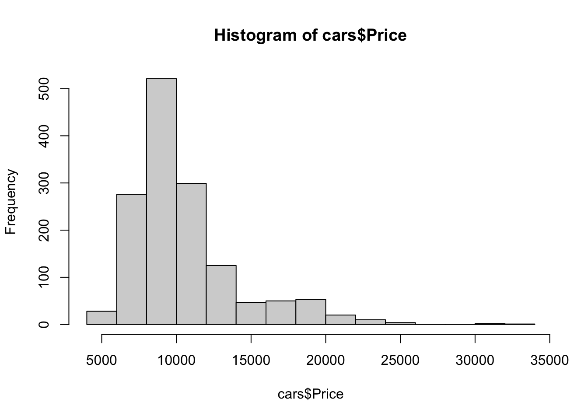
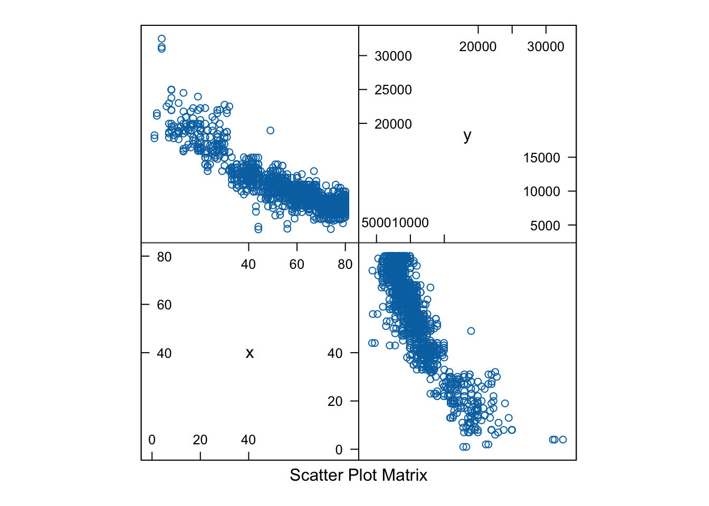
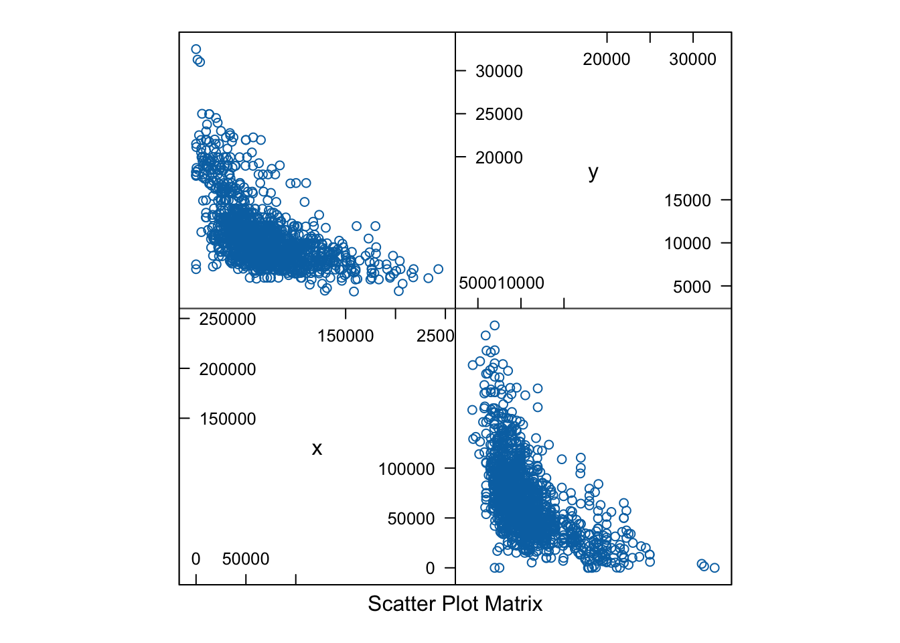
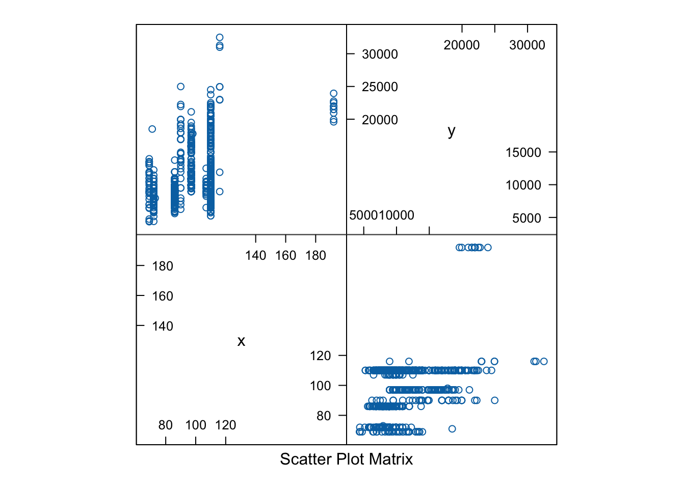
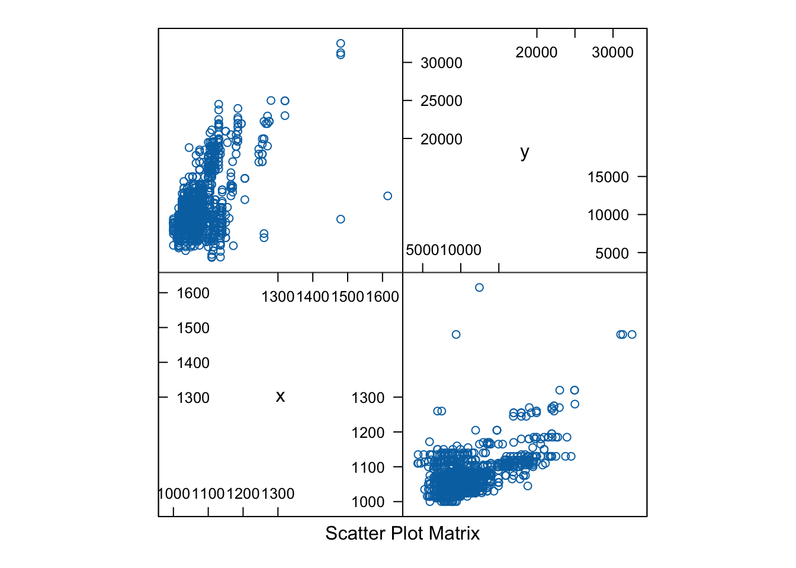
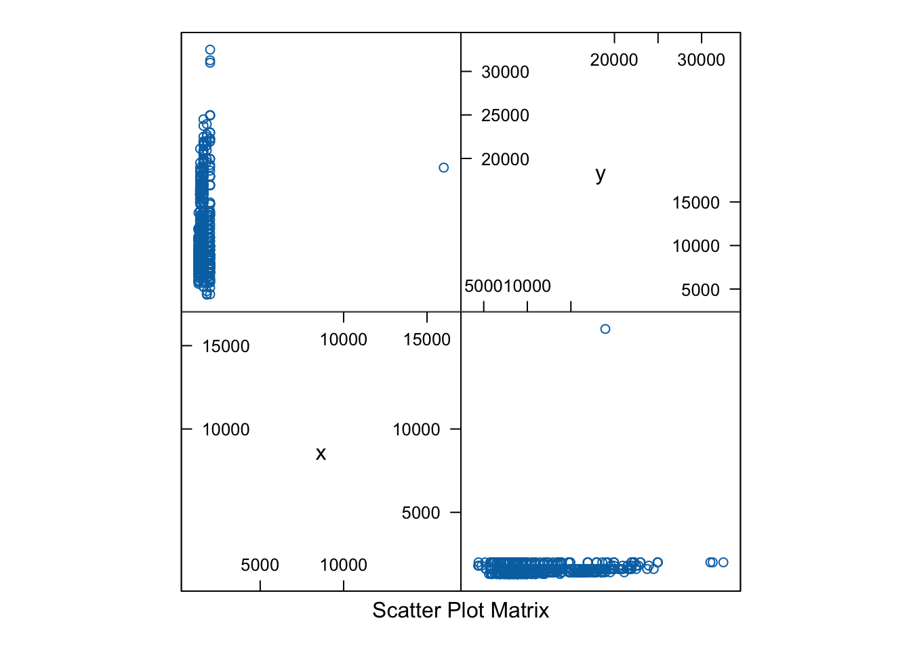
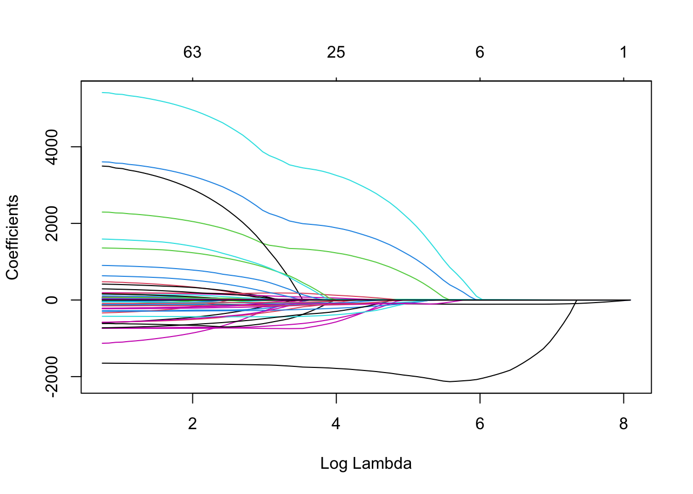
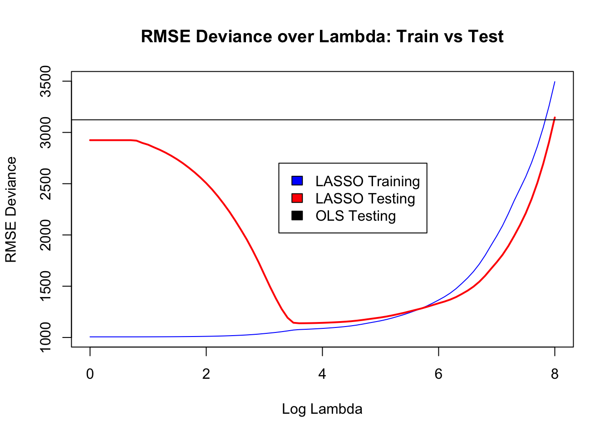
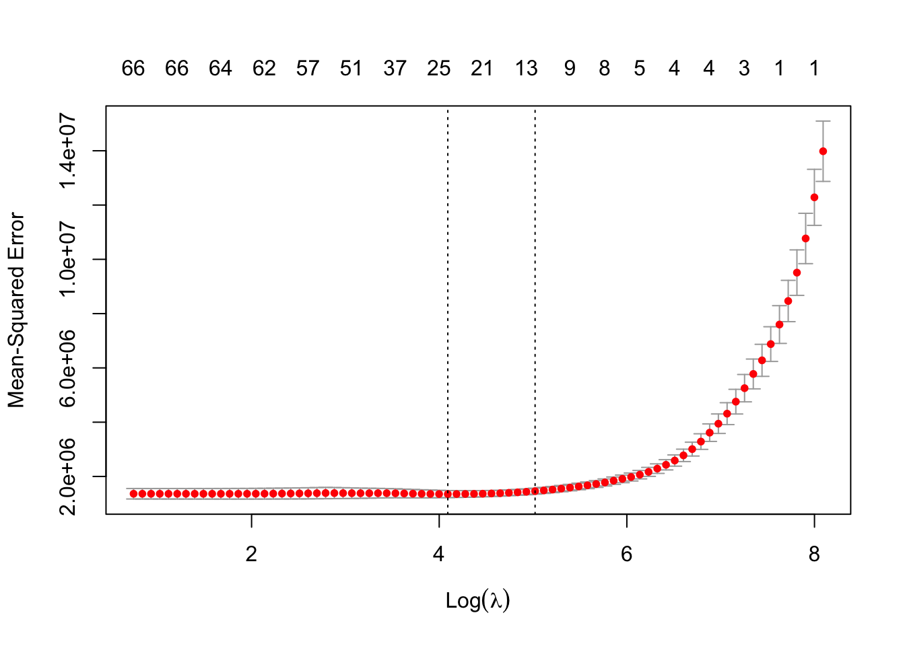

options(repos = list(CRAN="http://cran.rstudio.com/"))
rm(list = ls())Corolla Pricing with LASSO
The nonstandard R packages you will need to have installed and load for this document are all contained below.
install.packages("tidyverse")
The downloaded binary packages are in
/var/folders/v7/f2_6c0fn63xff0tsh5h3sdyr0000gn/T//RtmpQLAH3z/downloaded_packageslibrary(tidyverse)
library(glmnet)
library(lubridate)
library(caret)
library(dummy)
library(rpart)
library(rpart.plot)Linear Regression
A typical approach to prediction problems involves training a model that minimizes deviance. What is deviance? Well its essentially the pile of errors your model builds up over a sample. And while deviance takes different forms for different types of problems (like regression vs. classification), in regression problems the sum of squared errors (SSE) is commonly use as the deviance of the trained model from the observed outcomes in the data. For example, if we have a sample of 100 observations, then for each observation \(i\), we can view the actual outcome, \(y_i\). and compare it our model’s predicted outcome \(\hat{y_i}\), leading to an error \(e_i = y_i - \hat{y_i}\) and squared error \(e_i2 = (y_i - \hat{y_i})\). We can then pile up all those 100 \(e^2\)s to get a pile of errors. When a model generates a smaller pile of errors on a sample than another, then that model is doing a better job of prediction on that sample.
For a linear regression model we have a model that is formed by a simple equation. If we have \(k\) predictors then our model can be expressed as,
\[ \begin{align} \hat{y_i} &= \hat{\beta_0} + \hat{\beta_1}x_{1i} + \hat{\beta_2}x_{2i} + \cdots + \hat{\beta_k}x_{ki} \nonumber \\ &= \mathbf{x}_i'\hat{\boldsymbol{\beta}} \end{align} \]
where we have vectors, \(\mathbf{x}_i = [x_{1i}, x_{2i}, \cdots, x_{ki}]\) and \(\hat{\boldsymbol{\beta}} = [\hat{\beta_0}, \hat{\beta_1}, \cdots, \hat{\beta_k}]\). For \(n\) observations in a sample we are making predictions for, the deviance (or sum of squared errors - SSE) depends on the specific intercept and slopes we choose, i.e., which \(\hat{\boldsymbol{\beta}}\).
\[ \text{dev}\left(\hat{\boldsymbol{\beta}}\right) = \sum_{i=1}^{n} \left(y_i - \mathbf{x}_i \hat{\boldsymbol{\beta}} \right)^2 \]
We find the \(\hat{\boldsymbol{\beta}}\) for a particular sample by figuring out which values of \(\hat{\boldsymbol{\beta}}\) minimize deviance on that sample.
In predictive modeling, what we care most about is the model’s performance on new (future) data. When we calculate deviance on the data used for training we call it in-sample deviance. But what we really care about is out-of-sample (OOS) deviance. We approximate this the best we can by using data that wasn’t involved in the training process (i.e., test data, cross-validation error, etc.).
# Read in the data and prep data types.
cars = read_csv('ToyotaCorolla.csv') %>%
select(-Id, -Model, -Mfg_Month, -Cylinders, -Quarterly_Tax) %>%
rename(Age = Age_08_04) %>%
mutate_at(vars(-one_of(
c('Price',
'Age',
'KM',
'HP',
'CC',
'Weight')
)), .funs = factor)My analysis: This data set, cars, tracks 87 variables over 1436 observations. It is tracking the price of Toyota Corollas based on a number of factors, so each variable is a different feature of the Corolla and each observation is a different Corolla. There is no missing data in this set so we do not need to make a plan to deal with that.
hist(cars$Price)
My analysis: The Price variable looks alright for a linear regression. While the distribution does look right skewed, this is expected as not many Corollas would be dirt cheap (on the far left side of the distribution). The data does not have an excessive number of outliers.
featurePlot(x = cars$Age,
y = cars$Price,
plot = "pairs",
auto.key = list(columns = 3))
featurePlot(x = cars$KM,
y = cars$Price,
plot = "pairs",
auto.key = list(columns = 3))
featurePlot(x = cars$HP,
y = cars$Price,
plot = "pairs",
auto.key = list(columns = 3))
featurePlot(x = cars$Weight,
y = cars$Price,
plot = "pairs",
auto.key = list(columns = 3))
featurePlot(x = cars$CC,
y = cars$Price,
plot = "pairs",
auto.key = list(columns = 3))
My analysis: Some of these variables do have a relationship with Price. Age and KM have the strongest relationship, both being strongly negative, and age being the stronger of the two. This is likely because age/level of use degrades the value of a car quickly. Additionally, as age increases, there are more new features on newer cars which make them more valuable. This occurs independent of the level of driving a car is put though, making age more reliable than just KM. Weight is another variable I tested which has a strong relationship, this one also negative.
My analysis: None of the relationships seem too strongly related. Some are not continuous and thus do not have real distributions but are also thus not too strongly correlated that they must be eliminated. None of the continuous variables appeared to correlate even closely to 1:1 with price, as can be observed in my featurePlots above.
As a side note when building models with lots of categorical variables, you’ll want to often inspect how big these ‘groups’ are. For Guarantee_Period, there are several values, but we have periods 13, 18, 20, 24, 28, and 36 which each have 1 or 4 cars. This will create problems for us as models which rely on really rare categories. Especially if those categories are absent in future data.
cars %>%
select(Guarantee_Period) %>%
table()Guarantee_Period
3 6 12 13 18 20 24 28 36
1274 77 73 1 1 1 4 1 4 Based on the above, we will only want to include a few guarantee periods as dummies (3, 6, and 12).
# Convert all factors to dummy vars.
car_dum = dummy(cars, int = TRUE)
car_num = cars %>%
keep(is.numeric)
cars = bind_cols(car_num, car_dum)
rm(car_dum, car_num)# Partition the data.
set.seed(5970)
samp = createDataPartition(cars$Price, p = 0.65, list = FALSE)
training = cars[samp, ]
testing = cars[-samp, ]
rm(samp)# For OLS remove one dummy from each categorical var
training_ols = training %>%
select(-Mfg_Year_1998,
-Fuel_Type_CNG,
-Met_Color_0,
-Color_Beige,
-Automatic_0,
-Doors_2,
-Gears_3,
-Mfr_Guarantee_0,
-BOVAG_Guarantee_0,
-Guarantee_Period_13,
-Guarantee_Period_18,
-Guarantee_Period_20,
-Guarantee_Period_24,
-Guarantee_Period_28,
-Guarantee_Period_36,
-ABS_0,
-Airbag_1_0,
-Airbag_2_0,
-Airco_0,
-Automatic_airco_0,
-Boardcomputer_0,
-CD_Player_0,
-Central_Lock_0,
-Powered_Windows_0,
-Power_Steering_0,
-Radio_0,
-Mistlamps_0,
-Sport_Model_0,
-Backseat_Divider_0,
-Metallic_Rim_0,
-Radio_cassette_0,
-Parking_Assistant_0,
-Tow_Bar_0
)# Train Ordinary Least Squares
ols1 = lm(Price ~ .,
data = training_ols)
coef(ols1) (Intercept) Age KM HP
-1.783214e+02 -3.716281e+01 -1.649201e-02 6.323544e+01
CC Weight Mfg_Year_1999 Mfg_Year_2000
-4.461459e+00 1.095513e+01 6.297947e+02 1.346060e+03
Mfg_Year_2001 Mfg_Year_2002 Mfg_Year_2003 Mfg_Year_2004
1.949429e+03 3.861523e+03 5.279390e+03 7.096542e+03
Fuel_Type_Diesel Fuel_Type_Petrol Met_Color_1 Color_Black
4.489493e+03 7.269491e+02 -7.086229e+01 4.326831e+02
Color_Blue Color_Green Color_Grey Color_Red
3.527251e+02 1.132329e+02 3.178587e+02 2.525654e+02
Color_Silver Color_Violet Color_White Color_Yellow
2.079004e+02 3.199664e+02 -4.908328e+02 7.198950e+02
Automatic_1 Doors_3 Doors_4 Doors_5
6.023069e+02 -2.731599e+02 -9.138957e+01 -1.358638e+02
Gears_4 Gears_5 Gears_6 Mfr_Guarantee_1
1.806464e+02 7.349898e+02 5.179635e+02 2.959871e+02
BOVAG_Guarantee_1 Guarantee_Period_3 Guarantee_Period_6 Guarantee_Period_12
6.669424e+02 -1.390247e+03 -6.282641e+02 -4.791944e+02
ABS_1 Airbag_1_1 Airbag_2_1 Airco_1
-1.605311e+02 1.221752e+02 1.064131e+02 2.285296e+02
Automatic_airco_1 Boardcomputer_1 CD_Player_1 Central_Lock_1
1.635383e+03 -1.157608e+02 9.489124e+01 2.772641e+01
Powered_Windows_1 Power_Steering_1 Radio_1 Mistlamps_1
2.456190e+02 -3.703417e+02 6.842723e+02 1.586432e+02
Sport_Model_1 Backseat_Divider_1 Metallic_Rim_1 Radio_cassette_1
-3.947345e+01 2.597163e+02 1.044009e+02 -7.509118e+02
Parking_Assistant_1 Tow_Bar_1
-6.610268e+02 -2.016919e+01 # In-sample Deviance Measures
caret::postResample(pred = ols1$fitted.values,
obs = training_ols$Price) RMSE Rsquared MAE
1007.4567322 0.9275498 741.6332747 # Out-of-sample Deviance Measures
caret::postResample(pred = predict(ols1, newdata = testing),
obs = testing$Price) RMSE Rsquared MAE
3123.1904298 0.4571756 955.7421177 ols_rmse_test = as.numeric(caret::postResample(pred = predict(ols1, newdata = testing),
obs = testing$Price)["RMSE"])Regularization
In settings where you have lots of features that you might include in your model, you need to be careful to select the best model for predicting future data and avoid overfit. How can we do this?
- Use a “recipe” that provides a lot of good array of candidate models.
- Then sort through the pile and select from among the candidates to minimize the error on new data.
Behind the scenes that this means is changing the pile of errors (deviance) we are trying to minimize in a way that will shrink the coefficient (effect) a given feature can have on our model. If its coefficient is zero, for example \(\hat{\beta}_i = 0\) , then it has no impact. If \(\hat{\beta_i} \neq 0\) then the model has some effect and the further from zero a coefficient is, the bigger its impact on the model. Bigger impacts can lead to better predictions when its a true signal, but lead to bigger errors when the relationship is noise!!! So our goal is to let coefficients on real signals grow carefully, while shrinking coefficients on noise to zero. We accomplish this by measuring the size of \(\hat{\boldsymbol{\beta}}\) in addition to its effect on deviance. In other words we now want to choose values for \(\hat{\boldsymbol{\beta}}\) so as to minmize
\[ \text{dev}\left(\hat{\boldsymbol{\beta}}\right) + \lambda \cdot \text{L1Norm}\left(\hat{\boldsymbol{\beta}}\right) \]
where \(\text{L1Norm()}\) is the “size” of our coefficients \(\hat{\boldsymbol{\beta}}\) and this term is mathematically determined. The number \(\lambda\) is a penalty or the “price” we charge ourselves for letting \(\hat{\boldsymbol{\beta}}\) get too big. But this number is not pre-determined. It is a hyperparameter that we have to choose before doing a minimization problem.
As \(\lambda\) gets larger we want to shrink the size of \(\hat{\boldsymbol{\beta}}\) so that we have fewer nonzero coefficients (making the model more sparse) and the nonzero ones are closer to zero.
As \(\lambda\) gets smaller we want to allow the size of \(\hat{\boldsymbol{\beta}}\) to grow meaning coefficients get bigger and
Any value of \(\lambda\) we choose will have an impact on the coefficients learned from the data, which affects our predictions. Each value of \(\lambda\) we choose can be referred to as a regularization path. Again if \(\lambda\) is a price, then each price we set gives us a different prediction/error capacity. Instead of choosing just one value and hoping for the best, we can solve the problem and calculate different vector of coefficients \(\hat{\boldsymbol{\beta}}\) for each value of \(\lambda\). By default, the glmnet package will calculate coefficients for each of 100 different \(\lambda\) penalty values.
X = as.matrix(select(training, -Price))
y = training$Price
lasso_fit = glmnet(X, y)
plot(lasso_fit, "lambda")
The plot above shows the model results over different \(\lambda\) values. Imagine 100 vertical slices (represeneted by x-axis values) for different choices of \(\lambda\). The lines in the graph represent the values (sizes) of coefficients for potential features in our model. At each x-axis value, you can see which features have nonzero coefficients and how big or small some may be. As we go right, the value of \(\lambda\) increases until all coefficients shrink to zero and the model is extremely sparse. Low values of \(\lambda\) are on the left, where most all features have larger, non-zero coefficients and our model is quite large.
We can look at the model that results from any one regularization path by choosing a \(\lambda\) value to look at. You’ll see higher values lead to sparse models, lower values lead to complex models.
coef(lasso_fit, s = exp(2))87 x 1 sparse Matrix of class "dgCMatrix"
s1
(Intercept) 4.569550e+03
Age -5.502178e+01
KM -1.632840e-02
HP 5.296258e+01
CC -3.421634e+00
Weight 1.168093e+01
Mfg_Year_1998 -8.616763e+02
Mfg_Year_1999 -4.503567e+02
Mfg_Year_2000 .
Mfg_Year_2001 3.376733e+02
Mfg_Year_2002 2.049235e+03
Mfg_Year_2003 3.230824e+03
Mfg_Year_2004 4.960007e+03
Fuel_Type_CNG -7.388063e+02
Fuel_Type_Diesel 2.887021e+03
Fuel_Type_Petrol .
Met_Color_0 4.043266e+01
Met_Color_1 -1.071960e+01
Color_Beige -2.650599e+02
Color_Black 1.285332e+02
Color_Blue 6.423893e+01
Color_Green -1.140338e+02
Color_Grey 5.470243e+01
Color_Red -1.537235e-01
Color_Silver -1.500026e+00
Color_Violet .
Color_White -7.112599e+02
Color_Yellow 3.273754e+02
Automatic_0 -5.078627e+02
Automatic_1 1.587488e-09
Doors_2 7.085292e+01
Doors_3 -1.018097e+02
Doors_4 .
Doors_5 .
Gears_3 -6.610477e+02
Gears_4 -1.743563e+02
Gears_5 7.379914e+01
Gears_6 .
Mfr_Guarantee_0 -2.865842e+02
Mfr_Guarantee_1 .
BOVAG_Guarantee_0 -4.354167e+02
BOVAG_Guarantee_1 1.631778e+02
Guarantee_Period_3 -6.391368e+02
Guarantee_Period_6 .
Guarantee_Period_12 1.804401e+02
Guarantee_Period_13 .
Guarantee_Period_18 .
Guarantee_Period_20 1.233762e+03
Guarantee_Period_24 7.821458e+02
Guarantee_Period_28 1.402703e+03
Guarantee_Period_36 -4.871054e+02
ABS_0 8.412695e+01
ABS_1 -4.069281e-10
Airbag_1_0 -1.953724e+01
Airbag_1_1 .
Airbag_2_0 -5.088188e+01
Airbag_2_1 3.275354e-10
Airco_0 -2.110072e+02
Airco_1 .
Automatic_airco_0 -1.668244e+03
Automatic_airco_1 .
Boardcomputer_0 .
Boardcomputer_1 .
CD_Player_0 -1.230678e+02
CD_Player_1 .
Central_Lock_0 -6.151745e+01
Central_Lock_1 .
Powered_Windows_0 -1.834397e+02
Powered_Windows_1 .
Power_Steering_0 1.981174e+02
Power_Steering_1 .
Radio_0 .
Radio_1 .
Mistlamps_0 -1.452774e+02
Mistlamps_1 2.644046e-10
Sport_Model_0 2.989354e+01
Sport_Model_1 -2.805791e-10
Backseat_Divider_0 -1.788242e+02
Backseat_Divider_1 5.401914e-10
Metallic_Rim_0 -8.248562e+01
Metallic_Rim_1 .
Radio_cassette_0 5.188823e+01
Radio_cassette_1 .
Parking_Assistant_0 5.192945e+02
Parking_Assistant_1 -9.986572e-09
Tow_Bar_0 1.649845e+01
Tow_Bar_1 -2.683281e-10Which path is best for prediction? We can compare performance on the training data vs the testing data over all regularization paths and also compare to our OLS “kitchen sink” model in which we just added everything without regularization.
logLambda = seq(0, 8, 0.1)
testing_mat = as.matrix(testing)
RMSE_train = c()
RMSE_test = c()
for (i in logLambda) {
train_i = as.numeric(postResample(pred=predict(lasso_fit, X, s=exp(i)), obs=y)["RMSE"])
RMSE_train = append(RMSE_train, train_i)
test_i = postResample(pred=predict(lasso_fit, testing_mat[,2:87], s=exp(i)), obs=testing_mat[,1])["RMSE"]
RMSE_test = append(RMSE_test, as.numeric(test_i))
}
plot(x = logLambda, y = RMSE_train, type='l', col = "blue",
main = "RMSE Deviance over Lambda: Train vs Test",
xlab = "Log Lambda",
ylab = "RMSE Deviance")
lines(x = logLambda, y = RMSE_test, col="red", lw=2)
abline(h=ols_rmse_test, col="black")
legend(3.25, 2700, legend = c("LASSO Training", "LASSO Testing", "OLS Testing"), fill=c("blue", "red", "black"))
Cross-validated Choice of \(\lambda\)
But what value of \(\lambda\) do we choose to get the best model? From above we’d like to minimize deviance/error on new future data. Our test data gives us an indication of where this might be. We can use cross-validation to check each value of \(\lambda\) and find the one that gives us minimum or near-minimum error on hold-out data. This is our best guess as to performance on new future data.
cv_lasso = cv.glmnet(X, y, type.measure = "mse", nfolds=20)
plot(cv_lasso)
coef(cv_lasso, s = "lambda.min")87 x 1 sparse Matrix of class "dgCMatrix"
s1
(Intercept) 2.039867e+03
Age -9.268330e+01
KM -1.576064e-02
HP 1.957395e+01
CC .
Weight 1.408500e+01
Mfg_Year_1998 .
Mfg_Year_1999 .
Mfg_Year_2000 .
Mfg_Year_2001 .
Mfg_Year_2002 1.201695e+03
Mfg_Year_2003 1.850921e+03
Mfg_Year_2004 3.198377e+03
Fuel_Type_CNG -5.172226e+02
Fuel_Type_Diesel .
Fuel_Type_Petrol .
Met_Color_0 .
Met_Color_1 .
Color_Beige .
Color_Black .
Color_Blue .
Color_Green -7.267889e+00
Color_Grey .
Color_Red .
Color_Silver .
Color_Violet .
Color_White -4.444337e+02
Color_Yellow .
Automatic_0 -4.333903e+01
Automatic_1 1.852730e-11
Doors_2 .
Doors_3 .
Doors_4 .
Doors_5 .
Gears_3 .
Gears_4 .
Gears_5 .
Gears_6 .
Mfr_Guarantee_0 -2.072237e+02
Mfr_Guarantee_1 .
BOVAG_Guarantee_0 -3.708453e+02
BOVAG_Guarantee_1 4.353313e+01
Guarantee_Period_3 -2.726044e+02
Guarantee_Period_6 .
Guarantee_Period_12 1.143311e+02
Guarantee_Period_13 .
Guarantee_Period_18 .
Guarantee_Period_20 .
Guarantee_Period_24 .
Guarantee_Period_28 .
Guarantee_Period_36 .
ABS_0 .
ABS_1 .
Airbag_1_0 .
Airbag_1_1 .
Airbag_2_0 .
Airbag_2_1 .
Airco_0 -1.220682e+02
Airco_1 .
Automatic_airco_0 -1.795574e+03
Automatic_airco_1 .
Boardcomputer_0 .
Boardcomputer_1 .
CD_Player_0 -6.766796e+01
CD_Player_1 .
Central_Lock_0 -7.473071e+01
Central_Lock_1 .
Powered_Windows_0 -8.656770e+01
Powered_Windows_1 .
Power_Steering_0 .
Power_Steering_1 .
Radio_0 .
Radio_1 .
Mistlamps_0 -1.100573e+02
Mistlamps_1 2.767985e-11
Sport_Model_0 .
Sport_Model_1 .
Backseat_Divider_0 .
Backseat_Divider_1 .
Metallic_Rim_0 -1.450066e+01
Metallic_Rim_1 .
Radio_cassette_0 .
Radio_cassette_1 .
Parking_Assistant_0 .
Parking_Assistant_1 .
Tow_Bar_0 .
Tow_Bar_1 . coef(cv_lasso, s = "lambda.1se")87 x 1 sparse Matrix of class "dgCMatrix"
s1
(Intercept) 2.747413e+03
Age -1.006359e+02
KM -1.530218e-02
HP 1.754265e+01
CC .
Weight 1.374312e+01
Mfg_Year_1998 .
Mfg_Year_1999 .
Mfg_Year_2000 .
Mfg_Year_2001 .
Mfg_Year_2002 6.275309e+02
Mfg_Year_2003 1.161437e+03
Mfg_Year_2004 2.094682e+03
Fuel_Type_CNG .
Fuel_Type_Diesel .
Fuel_Type_Petrol .
Met_Color_0 .
Met_Color_1 .
Color_Beige .
Color_Black .
Color_Blue .
Color_Green .
Color_Grey .
Color_Red .
Color_Silver .
Color_Violet .
Color_White .
Color_Yellow .
Automatic_0 .
Automatic_1 .
Doors_2 .
Doors_3 .
Doors_4 .
Doors_5 .
Gears_3 .
Gears_4 .
Gears_5 .
Gears_6 .
Mfr_Guarantee_0 -8.108338e+01
Mfr_Guarantee_1 .
BOVAG_Guarantee_0 -7.355626e+01
BOVAG_Guarantee_1 .
Guarantee_Period_3 .
Guarantee_Period_6 .
Guarantee_Period_12 .
Guarantee_Period_13 .
Guarantee_Period_18 .
Guarantee_Period_20 .
Guarantee_Period_24 .
Guarantee_Period_28 .
Guarantee_Period_36 .
ABS_0 .
ABS_1 .
Airbag_1_0 .
Airbag_1_1 .
Airbag_2_0 .
Airbag_2_1 .
Airco_0 -5.937139e+01
Airco_1 .
Automatic_airco_0 -1.977027e+03
Automatic_airco_1 .
Boardcomputer_0 .
Boardcomputer_1 .
CD_Player_0 .
CD_Player_1 .
Central_Lock_0 -4.789938e+01
Central_Lock_1 .
Powered_Windows_0 -9.564883e+01
Powered_Windows_1 .
Power_Steering_0 .
Power_Steering_1 .
Radio_0 .
Radio_1 .
Mistlamps_0 .
Mistlamps_1 .
Sport_Model_0 .
Sport_Model_1 .
Backseat_Divider_0 .
Backseat_Divider_1 .
Metallic_Rim_0 .
Metallic_Rim_1 .
Radio_cassette_0 .
Radio_cassette_1 .
Parking_Assistant_0 .
Parking_Assistant_1 .
Tow_Bar_0 .
Tow_Bar_1 . Compare to OLS
Finally, lets see what this regularization process has yielded us. We first fit a plain OLS model with all variables, something that might likely lead to overfitting and including lots of noise. Overall prediction was not that great. Lets see how much better we do on the test data with regularization and cross-validation.
ols_res = postResample(pred=predict(ols1, testing), obs=testing$Price)
print(ols_res) RMSE Rsquared MAE
3123.1904298 0.4571756 955.7421177 cvlasso_res = postResample(pred=predict(cv_lasso, testing_mat[,2:87], s="lambda.min"),
obs=testing_mat[,1])
print(cvlasso_res) RMSE Rsquared MAE
1144.9031848 0.8868547 851.6820741 cvlasso_rmse = as.numeric(cvlasso_res["RMSE"])
paste0("Regularization reduced RMSE on test data by: ", round((ols_rmse_test-cvlasso_rmse)/ols_rmse_test*100,2), "%")[1] "Regularization reduced RMSE on test data by: 63.34%"My analysis: After regularization, my model is effective for predicting the price of Corollas for CorollaCrowd. Identifying and removing variables which caused overfitting in the model reduced RMSE by 63.34% and increased the Rsquared, the extent to which the variables in the model explain the variation in the data, by ~43%. This means our model is much more effective at capturing and using important variables to determine a given Corolla’s value. The model is not perfect - the Rsquared of the regularized model is still only 89%, meaning it does not explain over 10% of the variation in the data. This means, though, that our model is a generally good predictor.